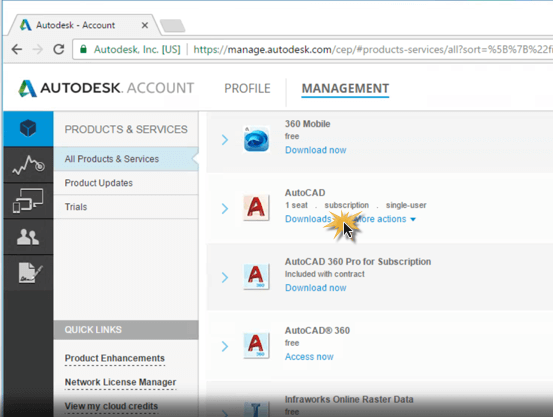
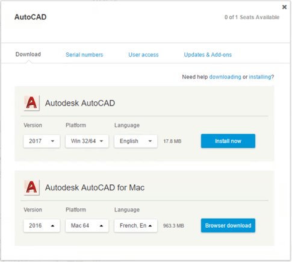
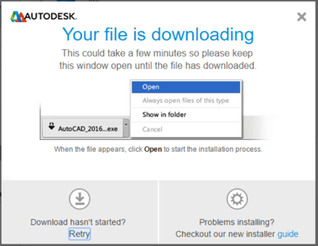
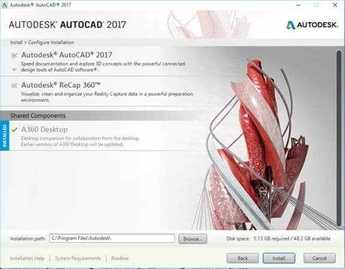
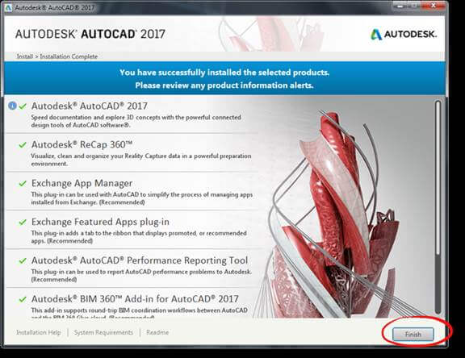
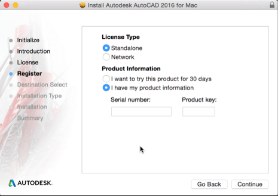

How To Install Auto-Cad
Download the Installer
The download method you use depends on the product and version.
To download the product installer (PC and Mac):
1. In Autodesk Account, find the software and click Download.

2. Specify the version, platform, and language that you want. Then click Install Now, Browser Download, or Download Now. Downloading can take several minutes.

3. Windows computers only: Read the License and Services Agreement, select I Accept and click Install.
The download screen is displayed as the download begins.

Accept the dialog boxes to confirm that you want to continue.
-------------------------------------------------------------------------------------------------------------------
Install the Downloaded Files
To install on a Windows computer:
1. When the installer files have been downloaded, find and double-click the files to start the installation. You can find them in one of the following locations:
Chrome -- Click the icon in the bottom-left corner of the screen.
Internet Explorer -- Click "Run" in the yellow outlined box in the bottom-center of your screen.
Firefox -- Click the download arrow in the upper-right corner.
2. Click Install/Install on this Computer.
3. Do the following and click Install:
Select the products or components to install.
Specify where the installed files will be located. If you don't want to use the default installation path, specify a new one. (The path name cannot exceed 260 characters).

This process can take several minutes.
4. When the installation is done you'll see a list of the installed software components. Click Finish to close the installer.

You may need to activate the first time you start your software. Follow activation instructions.
To install on a Mac computer
1. When the installer files have been downloaded, find and double-click the files to start the installation. You can find them in one of the following locations:
Chrome -- Click the icon in the bottom-left corner of the screen.
Firefox -- Click the download arrow in the upper-right corner.
Safari -- Click the .dmg file in Downloads.
2. Click Install .pkg and follow the prompts to continue.

3. Read the License & Services Agreement and click Continue. Then click Agree.
4. On the Register screen, do the following:
Select Standalone License Type.
Enter the Serial Number and Product Key.
Find Serial Numbers and Product Keys

5. Click Install.
When "The Installation was Successful" is displayed, your product installation is complete.